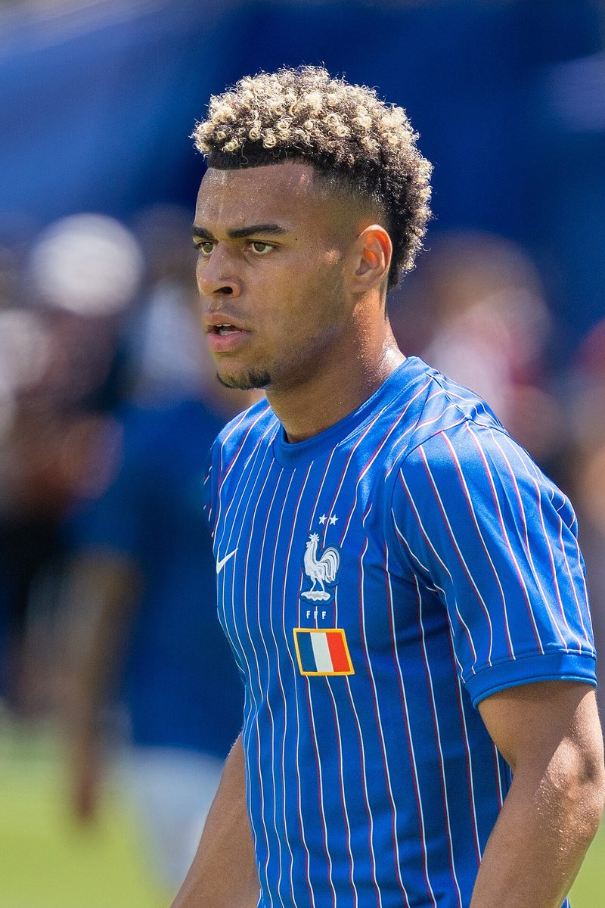

Four Goals in 17 Minutes: PSG Crush Villarreal 6-0 as the Champions League Favourites Pull Clear
Paris Saint-Germain and Real Madrid are the only teams with four wins from four. Arsenal, Como and Barcelona are the closest chasers.

There are thrashings, and then there is what Paris Saint-Germain did in Spain on Tuesday night.
At Villarreal's Estadio de la Cerámica, PSG were 4-0 up after 17 minutes. João Neves scored after nine minutes, Désiré Doué three minutes later, Senny Mayulu a minute after that, and Fabián Ruiz in the 17th. Ruiz added a second after the break, and David Boly completed a 6-0 win with twelve minutes left.
The numbers tell the same story. PSG had 71% of the ball and 12 shots on target. Villarreal's goalkeeper made six saves and still conceded six.

The two perfect teams
After four rounds, only two clubs have won every game: PSG and Real Madrid. Both have 12 points, with PSG top on goal difference (+15).
Real Madrid's fourth win was much harder. In Athens on Wednesday, AEK led twice. Jude Bellingham equalised the first goal, Kylian Mbappé the second, and Federico Valverde scored the winner in stoppage time to make it 3-2.
Behind them are Arsenal on 10 points, then Como on 9 after their remarkable 9-1 win at Lens, and Barcelona, also on 9, after beating Aston Villa 3-0.

Two ways to win
PSG's performance was built on intensity and control. Their young midfielders and forwards pressed high from the start, and the team completed 91% of its passes. Villarreal never had a chance to settle.
Real Madrid win differently. They are not always dominant, but they find a way, as they did in Athens. If the season goes to plan for both, these two may meet when it matters most. Four games into the league phase, they have set the standard everyone else has to chase.